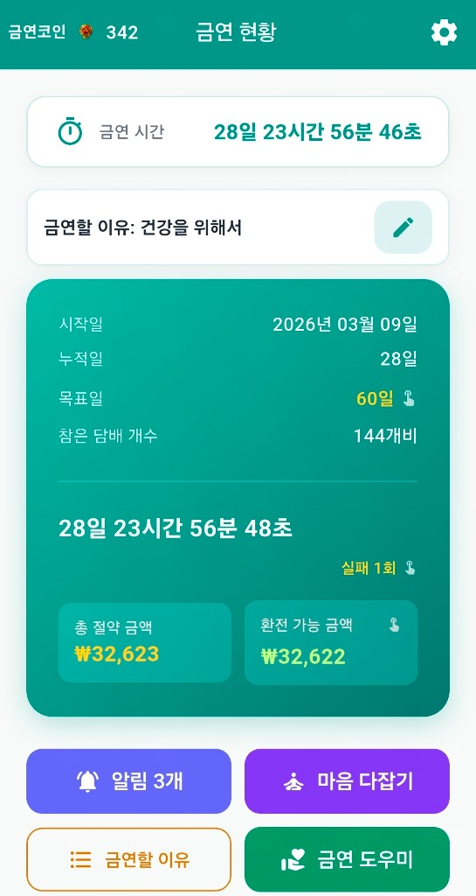
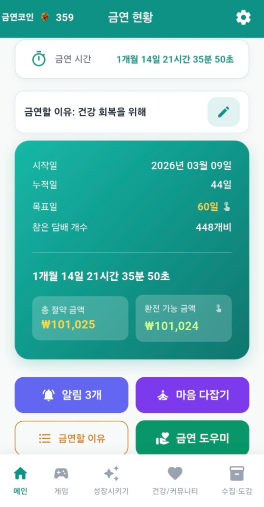
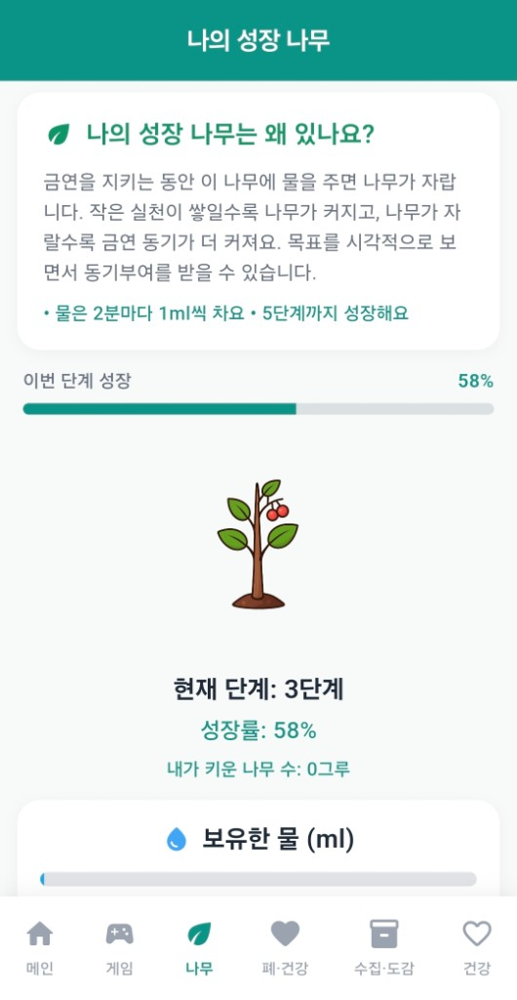
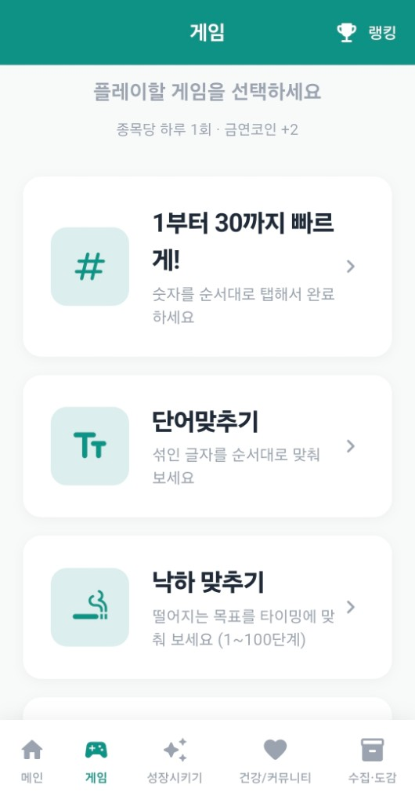
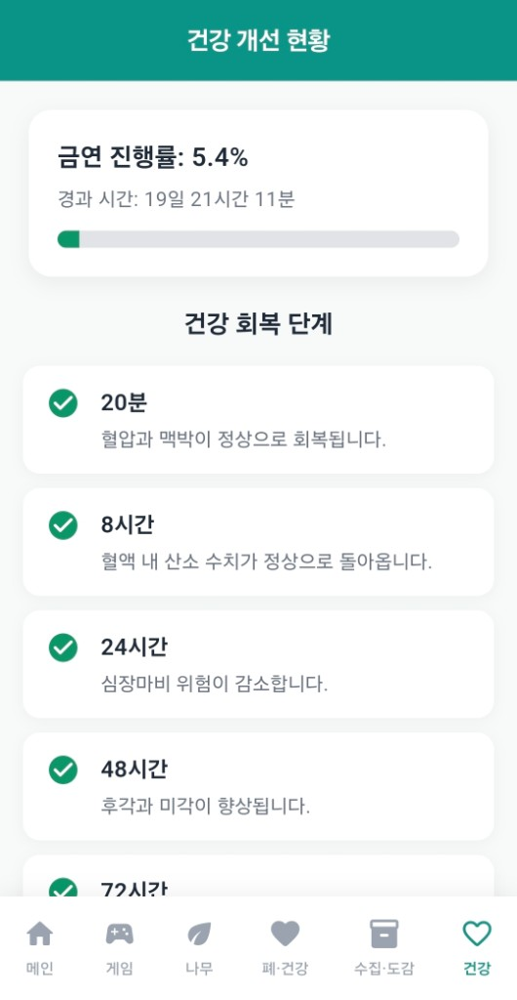
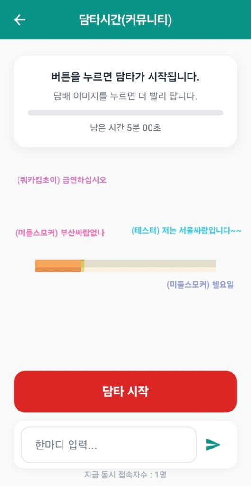

기존 금연 시도의 어려움
- 한 번의 흡연이 전체 실패처럼 느껴져 쉽게 포기하게 됩니다.
- 기록과 보상 체계가 없으면 동기 유지가 어렵습니다.
- 혼자 의지만으로 버티다 보면 재시도가 부담스러워집니다.
Android · iOS 금연 기록 앱 · 안드로이드 금연 앱 추천
금연 시간은 초 단위로 쌓이고, 절약 금액과 환전 가능 금액까지 메인에서 확인할 수 있습니다. 하단 탭으로 게임·성장(나무·드림카)·건강·커뮤니티·레포트·수집·도감을 한 흐름에 묶었고, 출석(주간 보너스 포함), 금연코인, 맞춤·패턴 알림, 담타시간 커뮤니티로 매일의 금연 루틴을 이어 가도록 돕습니다.
Android와 iPhone 모두에서 이용할 수 있습니다. 기기를 바꿔도 금연 기록을 이어서 관리할 수 있도록 설계되어 있습니다.
오늘의 금연 현황
접근 방식
사용 방법
금연 시작일, 목표일, 하루 흡연량/가격 등 기본값을 입력합니다.
개인적인 금연 이유를 저장하고 알림 문구에 사용할 이유를 선택합니다.
원하는 시간대 리마인더와 출석체크를 통해 금연코인을 쌓아갑니다.
주간·월간 레포트로 흡연·갈망 패턴을 돌아보고, 성장 나무·드림카·미니게임·담배 수집·도감·건강·폐 회복·담타시간으로 흡연 욕구 순간을 넘깁니다.
핵심 기능
금연 시간·금연 이유·시작일·목표일·참은 담배·실패 횟수, 총 절약 금액·환전 가능 금액을 한 화면에서 봅니다. 리마인더·마음 다잡기·금연 도우미·방금 피움·갈망 기록 등 바로가기로 흡연 욕구 관리에 바로 들어갑니다.
월간 출석판으로 매일 금연코인을 받고, 7일 주기마다 더 큰 보상이 기다리는 날이 있습니다. 당일 출석을 마친 뒤 하루 동안 출석 화면을 숨길 수도 있습니다.
출석·미니게임·메인의 절약 금액 환전 등으로 코인을 모읍니다. 로그인 시 게임 보상은 서버 검증으로 하루 1회(종목당) 지급됩니다. 실패 횟수 차감, 담배 수집 시도, 드림카 업그레이드 등에 사용합니다.
1부터 30까지 순서 탭, 단어 맞추기, 낙하 맞추기(다단계), 완벽 타이밍까지 네 종류의 미니게임과 랭킹 화면을 제공합니다. 갈망이 올 때 잠깐 손을 쓰는 용도로 쓰기 좋습니다.
금연을 유지하는 동안 물이 차오르고(2분마다 1ml), 물을 주며 나무를 최대 5단계까지 키웁니다. 모은 금연코인으로 드림카를 10단계까지 업그레이드하며 장기 목표를 시각화합니다.
나의 폐 건강은 경과에 따라 0~100% 회복을 보여 주고, 건강 개선 현황은 시간대별 회복 체크리스트를 제공합니다. 담타시간(커뮤니티)에서는 담배 타임 루틴과 채팅으로 동기부여를 이어 갈 수 있습니다.
「방금 피움」과 「갈망」으로 남긴 기록을 모아 주간·월간 탭으로 돌아볼 수 있습니다. 언제·어떤 상황에서 흡연 욕구가 강했는지 정리해, 금연 실패를 반복하지 않도록 스스로 점검하는 데 도움을 줍니다.
지정된 수집 가능 시간대에 지포라이터로 수집을 시도하고, 도감에서 획득한 갑을 슬롯으로 확인합니다. 금연코인으로 도전 횟수를 운영하며, 필요 시 수집을 초기화할 수 있습니다.
리마인더·금연 이유·비접속·출석·수집 가능 시간 알림 외에, 평소 기록을 바탕으로 한 패턴 알림(시간대 안내)을 설정할 수 있습니다. 홈 화면 위젯과 설정의 뱃지 모음으로 기록을 가깝게 둡니다.
앱 화면 갤러리
금연 시간, 금연 이유, 목표·참은 담배, 절약·환전 가능 금액을 한 화면에서 확인합니다.

28일 출석판과 일일 보상, 7일 주기 보너스로 꾸준함을 시각화합니다.

2분마다 1ml씩 차오르는 물로 나무를 키우고, 최대 5단계까지 성장시킵니다.

모은 코인으로 10단계까지 차량을 업그레이드하며 장기 목표를 만듭니다.

금연 진행률과 시간대별 건강 회복 단계를 체크리스트로 확인합니다.

수집 가능 시간대에 지포라이터로 수집을 시도하고, 금연코인으로 도전 횟수를 운영합니다.
획득한 담배갑을 슬롯으로 모으며 수집 진행도를 한눈에 봅니다.
숫자·단어·낙하·완벽 타이밍 등 미니게임과 랭킹으로 갈망 순간을 전환합니다.

유지 로드맵
금연뱅크는 완벽한 하루보다 지속 가능한 하루를 목표로 설계되었습니다. 기록, 알림, 보상, 시각화 기능으로 다시 시작하기 쉬운 경험을 제공합니다.
FAQ
금연뱅크는 다시 시작하는 금연에 초점을 두고 있어 실패 횟수는 기록되지만 금연 시간은 유지됩니다.
출석·미니게임(종목당 하루 1회 보상, 로그인 시 서버 검증)·메인 화면에서 절약 금액을 환전하는 방식 등으로 모을 수 있습니다. 실패 횟수 차감, 담배 수집 시도, 드림카 단계 업그레이드 등 동기 기능에서 사용됩니다.
리마인더 알림, 금연 이유 알림, 비접속 알림, 출석 알림, 수집 가능 시간 알림을 지원하며, 평소 흡연 패턴을 바탕으로 한 패턴 알림(시간대 안내)도 설정할 수 있습니다.
앱 기록은 사용자 경험이 끊기지 않도록 안정적으로 관리되며, 로그인 시 서버와 동기화해 기기를 바꿔도 금연 여정을 이어 갈 수 있도록 설계되어 있습니다.
네. App Store에서 금연뱅크를 내려받을 수 있습니다. Google Play용 Android 앱과 동일한 콘셉트로 금연 시간·코인·출석 등 핵심 기능을 모바일에서 이어 갈 수 있습니다.
메인, 게임, 성장시키기(나무·드림카), 건강·커뮤니티(폐 건강·건강 개선·담타시간), 레포트(주간·월간 패턴), 수집·도감 탭으로 구성되어 있습니다.
하루 여러 번 열리는 짧은 수집 가능 시간대 안에서 지포라이터로 수집을 시도할 수 있으며, 해당 시간에 맞춰 알림을 받을 수 있습니다.
금연 시간·절약·환전, 금연코인·출석, 미니게임·랭킹, 나무·드림카, 수집·도감, 건강·폐 회복, 주간·월간 레포트, 담타시간 커뮤니티, 맞춤·패턴 알림·위젯·뱃지를 한 앱에서 이어 갈 수 있습니다.